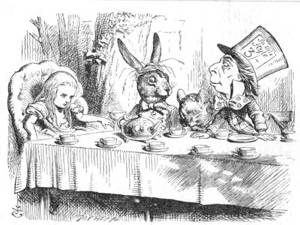
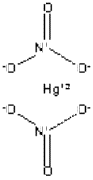
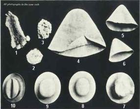
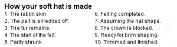
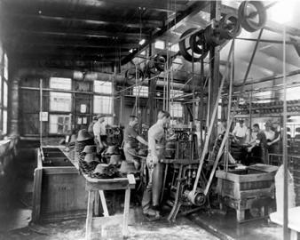
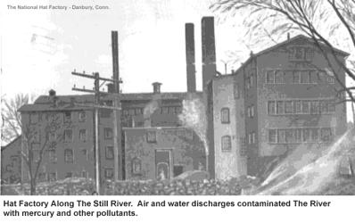

| METALS IN MEDICINE AND THE ENVIRONMENT | |||
| Metals | Mercury and Mad Hatters | ||
|
The phrase “mad as a hatter” is a quaint, though seemingly irrelevant, catchphrase that has taken root in our 21st century cultural lexicon thanks to the enduring popularity of Lewis Carroll’s Alice’s Adventures in Wonderland, which features an eccentric character known as the Mad Hatter. The phrase itself predates the use of mercury in hat-making and the character was not even based on a hatter, but on an eccentric furniture dealer whom Carroll knew (1,2). Mercury was known in ancient societies and has been used for a variety of purposes throughout the ages, including as a medicine or cosmetic, metal, especially gold and silver, extraction, in dentistry and medical instruments, and for several centuries, in hat-making (3).  Societal mores of the eighteenth and nineteenth centuries dictated that decent citizens wear hats in public, making hatting an important, if unesteemed, sector of the economic production. Most hats were made of felt produced from animal fur. The top fur on a pelt would be stripped away and the fine fur collected, matted onto a cone, and boiled to condense the fibers (4). The fur would be continually steamed and rubbed until felt of a sufficient quality had been produced. The felt hood could then be blocked, shaped, lined, and finished into a hat. French hatters were the first to use mercuric nitrate, Hg(NO3)2, solutions during the felting process (2). This solution raised the scales on the fur shafts, helping them to mat more smoothly while also working to separate the fur from the animal skin (4,5). This process exposed felt workers to toxic levels of mercury vapors.  Figure 1. Mercuric nitrate   Symptoms of Poisoning Mercury attacks the central nervous system, and its vapor is readily absorbed in the brain (6). The psychotic symptoms of mercury poisoning were collectively termed erethism and included “excessive timidity, diffidence, increasing shyness, loss of self-confidence, anxiety, a desire to remain unobserved and unobtrusive … a pathological fear of ridicule” which caused the sufferer to explosively lose his or her temper when criticized (2). Additionally, victims exhibited outward symptoms such as tremors and muscle twitching, excessive salivation, difficulties thinking and speaking clearly, and in some cases, hallucinations (5). The persistence of the mercury-based felting process indicates that although chronic exposure caused irreversible damage and death in some cases, acute concentrations of mercury vapors must have been rare enough to make the process economically viable and entice a sufficient number of workers into the industry. How Mercury Affects the Brain Between 72% and 88% of mercury in the brain exists as inorganic mercury with a half-life of several years, and is “distributed to the gray matter of the cerebral and cerebellar cortices and to various brainstem nuclei” (7, 8). Studies of increases in miniature end-plate potentials (MEPP) while blocking Na+ and Ca2+ ion channels suggests that inorganic mercuric ions can enter nerve terminal through the ion channels (9). The post-synaptic MEPP signal has not appeared in studies to be affected by mercury, which implies that the mercury blockage of synaptic transmissions is pre-synaptic (9). Once in the brain, mercurial compounds stimulate the gamma-aminobutyric acid (GABA) system. The GABA system is a chief inhibitory neurotransmitter for the central nervous system, responsible for regulating neuronal excitability. Studies of neuromuscular transmission have shown that mercurials decrease the nerve-evoked release of acetylcholine (ACh), a neurotransmitter that causes excitation (9). Inorganic salts dismantle microtubules and inhibit assembly of new microtubules from tubulin by binding to the tubulin sulfhydryls (6). This leads to cell death and disrupted neural transmission. Danbury: A Case Study  The hat-making industry in Danbury, Connecticut was sparked in the eighteenth century by a wealth of natural resources: water, furs, and people, and exploded in the nineteenth century with the Industrial Revolution. As many as fifty-six factories were in production, exposing numerous workers to chronic toxic levels of mercuric nitrate (5). Despite full awareness of the mental and fine-motor disturbances of this exposure, the hatters’ union objected to a scientific study of mercury poisoning among its members in 1934, perhaps aware of what the study would inevitably conclude and local economic instability that would result (5). Mercury felting processes were being phased out around this time, and in 1941 the use of mercury in hat-making was banned by the United States Public Health Service (3).  The social and cultural importance of hat-wearing dimmed in the 1950s and 1960s, and demand dropped, forcing closure of the last of the factories. The industry’s toxic legacy remains in the soil around Danbury. Near one prominent former factory, the mercury concentration of the surface soil was 67,000 parts per billion (3). Mercury settled in the sediment of the nearby Still and Housatonic Rivers, where it has been brought up after heavy flooding in the region (3). References (1) Hatter.(2008). Image Credits Cover
|
|||
| Topics | |||
|
|||
{kind=link}